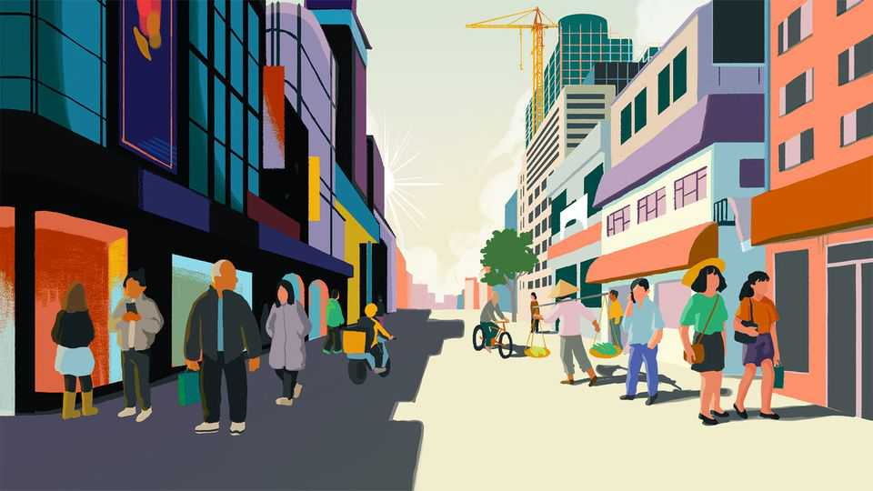

A glum China pines for the 1990s
Back then, leaders delivered and opportunity beckoned–or so the story goes

Aug 20th 2026
THE 1990s ARE alive again. Over the past few days viewers of state television in China have feasted on scenes from that decade. A 12-part documentary has aired in prime time to celebrate the centenary of the birth of the late Jiang Zemin, the country’s leader throughout the period. What a decade it was, bookended, in 1989, by the blood of Tiananmen and, in 2001, by all the promise of China’s entry into the World Trade Organisation.
This progression, which may seem inevitable in retrospect, was never anything but fraught. But what captivates viewers is less Jiang’s accomplishments than a common touch and a panache that seem nearly inconceivable among China’s leaders and their tightly scripted public comportment today. There he is in one scene in 1989, four months after the crackdown on the Tiananmen pro-democracy protests, hugging babies in Beijing. In another, Jiang slams a forehand in table tennis before telling national-team athletes that he hopes they win gold at the upcoming Asian Games. “Let me take that back. You shouldn’t have too much pressure,” he says with a big smile, laughter erupting in the room. In a third, Jiang is belting out Beijing opera at a formal dinner in California, a study in contrast with the buttoned-up nomenklatura of today’s China, Xi Jinping above all.
Then, as the documentary ran, a cosmic coincidence: on August 12th Jiang’s essential partner, Zhu Rongji, died at the age of 97. If Jiang was the political maestro, Zhu, his prime minister, was the one who got his hands dirty. Online commentary praised Zhu’s blunt, effective approach—an implicit rebuke of today’s more cautious officials. The day he died, the documentary happened to feature Zhu explaining how he cajoled cadres into tough reforms: “I’m not here to talk about pros and cons. I am here to talk about how to get things done.”
Even before the documentary and Zhu’s death, nostalgia for the 1990s had been building. A viral trend last summer spoke of “the beauty of the boom years”, with people sharing images of youthful exuberance in the 1990s and the early 2000s. A recent television hit, “Blossoms”, about Shanghai in those days, captures the mood. At one point the narrator says: “Everyone stands equal before opportunity. Seize it, and you could change your life.” Some have echoed the sentiment as they remember Zhu. “Back then people had a spark in their eyes, certainty in their hearts and a tomorrow they could actually see,” wrote Zhao Jian, an economist, in a widely shared piece—before it was scrubbed from the internet.
What to make of all this? A cynical take is that memory is playing its usual tricks. If the 1990s now look like a decade of possibilities opening up, recall that China was so much poorer then, on the cusp of high-speed development. In 1990 its GDP per person, adjusted for inflation, was just $920; today it is 15 times higher. Or consider the rise in university graduates: 12m a year now, up from about 700,000 in the 1990s. In the Jiang-Zhu era nearly three-quarters of China’s population still lived in the countryside, which was mired in poverty. No wonder urbanites lucky enough back then to get a good education felt that destiny was theirs to chart. Yet for most in China, the path ahead was one struggle after another.
So the nostalgia should not be read as a rigorous account of history. Rather, it acts as the reflection of a malaise today. Most obviously, people are down about the economy. Job opportunities are pinched, property has slumped and many entrepreneurs are struggling. Yet to dwell on these issues carries consequences, with, for instance, censors erasing posts about the economy that lack “positive energy”. For some, harking back to how good things were in the 1990s is a way round such controls. For others, it may simply be a longing for a better life.
There is also great frustration about politics in China today. Scholars debate whether Jiang and Zhu really deserve their “reformist” labels. Political reformers they certainly were not: Communist Party elders chose them to reinforce party will and pick up the pieces following the Tiananmen trauma. As economic liberalisers, there were also limits. Their signature overhaul of state-owned companies was to “grasp the large and let go of the small”, hiving off useless businesses while modernising the important ones in finance, infrastructure and heavy industry. The aim, as Jiang put it, was to retain control of “the lifeline of the national economy”. Above all, they aimed to strengthen the state and entrench party rule.
For all that, Jiang and Zhu were certainly daring, taking bold risks against real resistance. Conservatives (ie, leftists) opposed their market-driven policies, worried that opening China to trade with the world would suck in toxic political ideas. Many reforms also exacted a vast human toll, with more than 30m workers laid off—though the eventual benefits were larger. Do today’s leaders have similar vision and courage? True, they have been in charge during some high-tech advances. Yet a trade war with America drags on, while property remains stuck in its years-long funk. Tributes to Zhu came not just from ordinary people but from universities, legal associations, financial groups and think-tanks. It is hard not to see their veneration as a plea for wiser leadership.
Beyond that is something unquantifiable about the style of the leaders in the 1990s—about the frankness with which they spoke, their sense of warmth and real humanity, their ease when out and about among the public. Certainly, people were also wary of Jiang and Zhu; under them, China was hardly free. But they were admired and even loved. Today, when people talk of Mr Xi, the dominant emotion is often fear. Many Chinese are so circumspect as to avoid mentioning his name altogether. He is the paramount ruler, not a chap who cracks jokes or bursts into song. ■